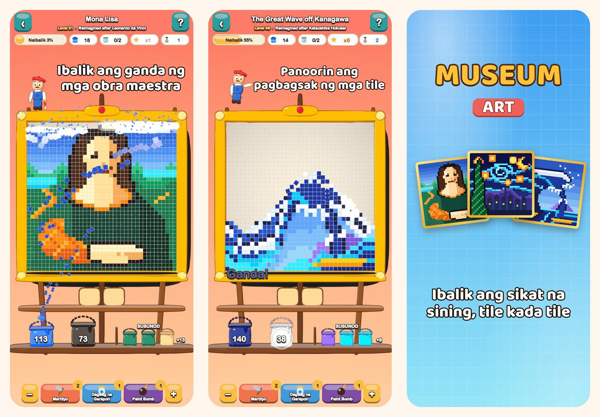

Museum Art
Color puzzle sa pixel art
Mag-tap ng kulay at panoorin ang pagbagsak ng mga tile. Ibalik ang ganda ng 51 larawang pixel art, mula sa Mona Lisa hanggang Istanbul, Paris, Rome at New York.
I-download sa App Store
Tungkol sa laro
Gawa sa makukulay na parisukat na tile ang bawat larawan sa Museum Art. Alisin ang mga ito, isang kulay sa bawat pagkakataon, at panoorin ang muling pagkinang ng larawan.
PAANO LARUIN
- I-tap ang bahagi ng kulay na dumidikit sa pinakaibabang hanay, o i-tap ang balde sa istante: lilipad ang mga tile papunta sa kanilang balde.
- Dumudulas pababa na parang buhangin ang mga tile sa itaas at nagbubukas ng bagong tira.
- Wala pang balde para sa isang kulay? Ilagay muna ito sa garapon sa tray.
- Bawasan ang paggamit ng tray para makakuha ng mas maraming bituin.
51 LARAWANG IRE-RESTORE
- Maliliwanag at madadaling larawan sa simula: hot air balloon, bangkang may layag, pusa at parola.
- Kalikasan: mga bundok na may niyebe, lawa sa bundok, cherry blossoms at disyerto sa takipsilim.
- Isang world tour sa Istanbul, Paris, Rome at New York.
- Ang Masters' Vault: The Great Wave, The Starry Night, Water Lilies, The Milkmaid, Impression, Sunrise at Mona Lisa, na muling iginuhit bilang pixel art.
RELAX AT PATAS
- Kayang tapusin ang bawat level nang walang booster, at libre ang pag-ulit.
- May booster para sa mahihirap na sandali: Hammer, Extra Jar at Paint Bomb.
- Mag-zoom sa mga detalye kahit kailan mo gusto.
- May kawili-wiling fun fact ang bawat larawan.
- Laruin sa 19 na wika.